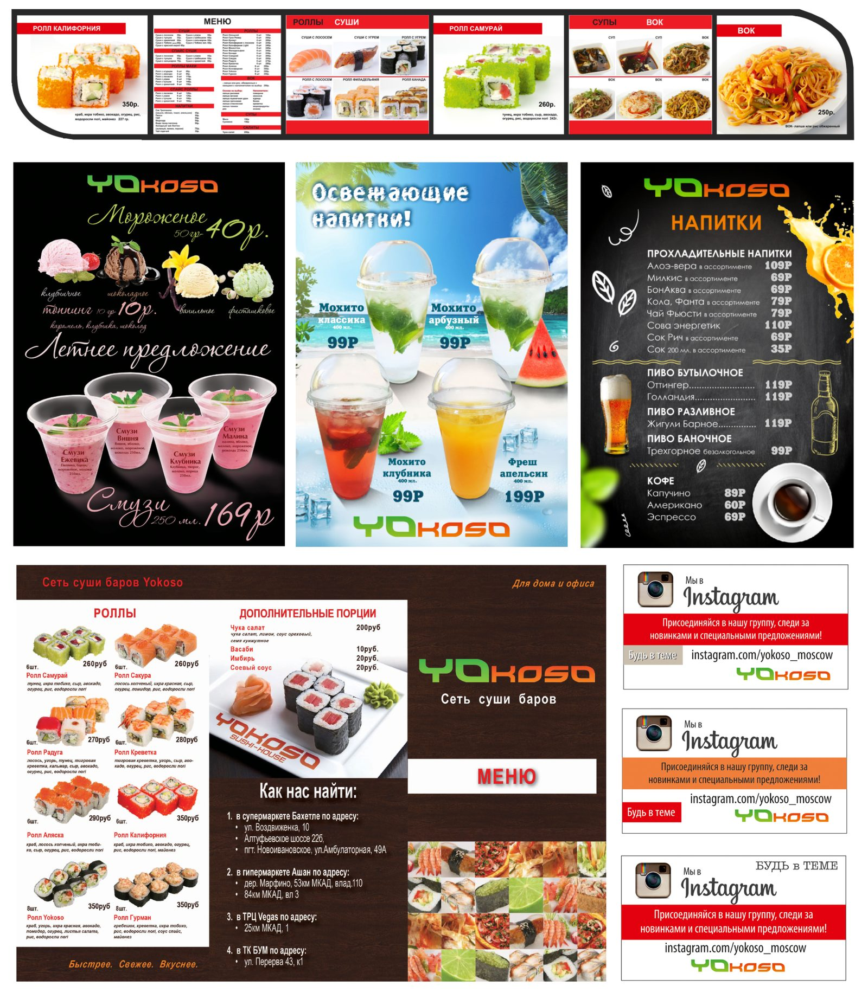
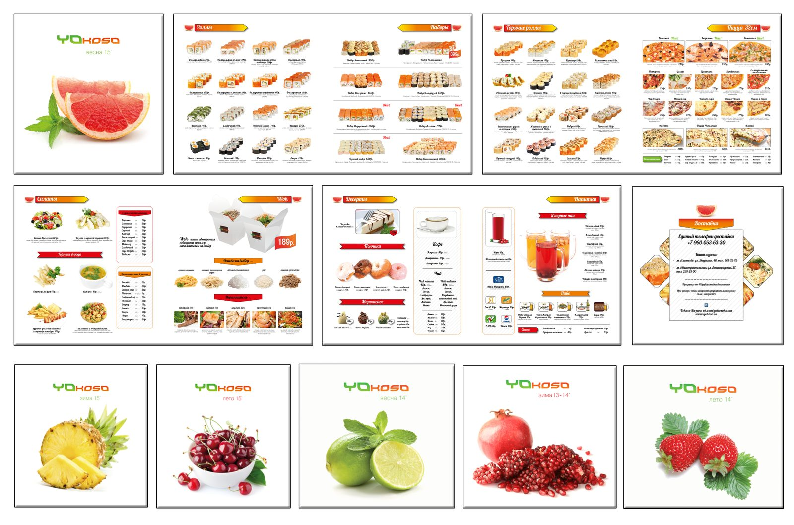

← All work
Sushi delivery brand
Yokoso
Ongoing marketing design for Yokoso, a sushi and food delivery brand. The goal was to keep a bold, recognizable look across every menu, promotion and post while launching new offers regularly.
- Role
- Marketing and brand application design
- Deliverables
- Menus, delivery flyers, drinks menu, promotional posters, social media posts, staff uniforms
- Tools
- Illustrator, InDesign, Photoshop


